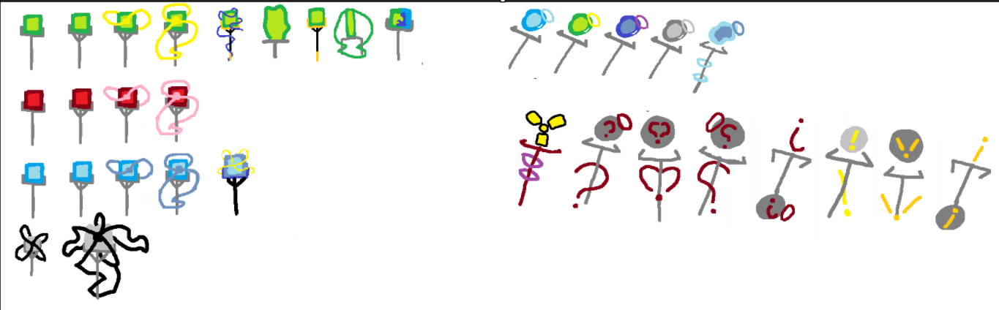
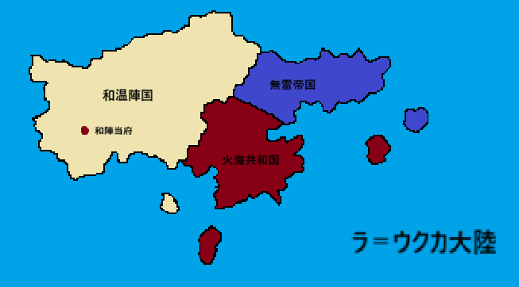

和温陣の旗
デジタルと伝統、そして「安定」の象徴。
入国管理システム
ラ＝ウクカ大陸への渡航、および市民権の取得には公式の「入国審査」が必要です。
Wニュース公式サイト
OFFICIAL LINK和温放送局（WZN）による最新の情勢配信。入国前に大陸の現状を確認することを推奨します。
EXTERNAL_SITE >>
王（仮）専用機：和温の杖

和温の杖
この国における「安定」は、杖を介した「陣」の展開によって維持される。国民は各々の役割に基づいた杖を所持し、それは一生の伴侶となる。
※王（仮）専用機は、大陸全土の「構造維持」を司る中核デバイスとして、特別なライセンス管理下にあります。
歴史のアーカイブ
📖 歴史書を閲覧 (.txt)ラ＝ウクカ大陸全図

MAP_ID: LA-UKUKA_01